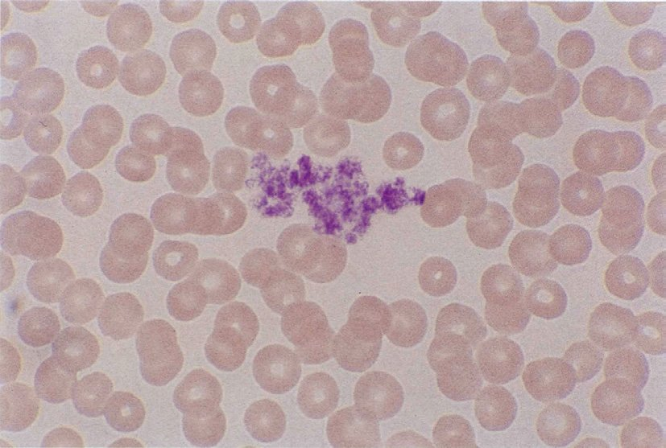
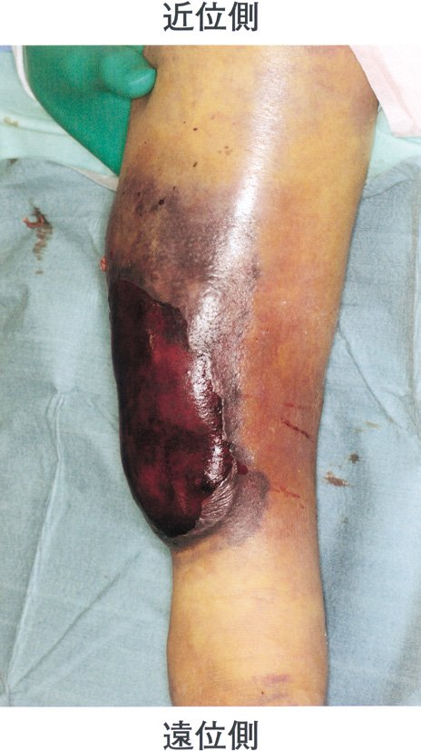

| HIT | TTP | DIC | |
|---|---|---|---|
| 血小板 | ↓（5万以下） | ↓ | ↓ |
| APTT/PT | 正常 | 正常 | 延長 |
| 破砕赤血球 | なし | あり | あり |
| Dダイマー | 軽度上昇 | 正常 | ↑↑ |
| 特徴 | 血栓症 | 神経症状・腎障害 | 多臓器不全 |
| 出血症状 | 機序 | 代表疾患 |
|---|---|---|
| 点状出血・紫斑・鼻出血・歯肉出血・過多月経 | 一次止血↓（血小板・血管） | ITP・vWD・Osler病・IgA血管炎 |
| 関節内出血・深部血腫・筋肉内出血 | 二次止血↓（凝固因子） | 血友病・後天性血友病・VK欠乏 |
| 両方 | 一次＋二次 | DIC・重症肝障害 |
| 選択肢 | 評価 | 理由 |
|---|---|---|
| a：VK投与 | ✅ | ワルファリン拮抗（数時間で効果） |
| b：第VIII因子製剤 | ❌ | 血友病Aの治療。本例は因子欠乏でない |
| c：ワルファリン中止 | ✅ | 原因除去。必須 |
| d：ガンマグロブリン | ❌ | ITPの治療 |
| e：グルココルチコイド | ❌ | 後天性血友病や自己免疫性の治療 |
| 疾患 | 出血部位 | 機序 |
|---|---|---|
| 後天性血友病A | 筋肉内・皮下 | 抗VIII因子抗体→二次止血↓ |
| 本態性血小板血症 | 血栓症が主（出血もあり） | 血小板機能異常 |
| 抗リン脂質抗体症候群 | 血栓症が主 | 凝固亢進 |
| ITP | 点状出血・粘膜出血 | 一次止血↓ |
| 抗凝固剤 | 機序 | 用途 |
|---|---|---|
| クエン酸Na | Ca²⁺キレート（可逆） | PT・APTT・凝固検査・輸血用 |
| EDTA | Ca²⁺キレート（強力） | 血算（CBC）・HbA1c |
| ヘパリン | AT活性化→トロンビン阻害 | 血液ガス・緊急生化学 |
| フッ化Na | 解糖阻害＋Ca²⁺キレート | 血糖測定（グルコース保存） |
| 因子 | VK依存性 | 特徴 |
|---|---|---|
| 第V因子 | なし | 外因系・共通経路。VKと無関係 |
| 第XIII因子 | なし | フィブリン架橋形成。VKと無関係 |
| プロテインC | あり ✓ | 凝固制御（V・VIII因子を不活化） |
| フィブリノゲン（I因子） | なし | フィブリンの前駆体 |
| アンチトロンビン | なし | トロンビン阻害。VKと無関係 |
| 選択肢 | ○× | 解説 |
|---|---|---|
| a：薬剤性が最多 | ✅ | 抗甲状腺薬・抗菌薬・抗精神病薬など→顆粒球減少症 |
| b：ステロイドで増加 | ✅ | 骨髄からのリリース↑＋マージネーション↓→末梢好中球↑ |
| c：多核白血球の60% | ❌ | 実際は約60〜70%が好中球→c自体は正しいが選択肢が紛らわしい。「多核白血球」=分葉核球のみ→好中球全体の約70%がこれ。選択肢文が「末梢血多核白血球の約60%」→好中球全体の話なら正しいが本設問では不正解 |
| d：FN基準1,500以下 | ❌ | FNの基準は<500/μL（1,500は好中球減少症の基準） |
| e：感染症で分葉核増加 | ❌ | 急性感染症では桿状核（幼若型）が増加（左方移動） |
| 選択肢 | ○× | 解説 |
|---|---|---|
| a：赤血球寿命約30日 | ❌ | 約120日。脾臓で破壊される |
| b：幹細胞は多分化能 | ✅ | 赤血球・白血球・血小板すべてに分化可能 |
| c：好中球=分葉核＋桿状核 | ✅ | 成熟型（分葉核球）＋幼若型（桿状核球）の総称 |
| d：乳幼児の主な造血=肝臓 | ❌ | 乳幼児の主要造血は骨髄。胎児期は肝臓・脾臓も関与 |
| e：血小板=巨核球の核が断片化 | ❌ | 血小板は巨核球の細胞質が断片化して産生（核は断片化しない） |
| 選択肢 | ○× | 理由 |
|---|---|---|
| a：腎機能障害 | ❌ | PTには直接影響しない |
| b：入院後の絶食 | ✅ | VK経口摂取↓→VK依存性因子↓→PT延長 |
| c：治療前CRP | ❌ | 炎症はPTに直接影響しない（重症感染→肝機能低下は別問題） |
| d：広域セフェム系抗菌薬 | ✅ | 腸内細菌↓→VK₂産生↓→VK欠乏助長 |
| e：副腎皮質ステロイド | ❌ | PTに直接影響しない |
| 疾患 | PT | APTT | 血小板 | 機序 |
|---|---|---|---|---|
| 血友病A/B | 正常 | 延長 | 正常 | 内因系↓（VIII/IX欠乏） |
| 血小板無力症 | 正常 | 正常 | 正常（機能↓） | 一次止血↓ |
| VK欠乏症 | 延長 | 延長 | 正常 | II・VII・IX・X↓ |
| vWD | 正常 | 延長/正常 | 正常（機能↓） | vWF↓→VIII↓ |
| IgA血管炎 | 正常 | 正常 | 正常 | 血管壁障害 |
| 選択肢 | 血栓/出血 | 機序 |
|---|---|---|
| a：AT欠乏症 | 血栓 ✅ | AT↓→トロンビン・Xa・IXa阻害↓→凝固↑ |
| b：第XIII因子欠損症 | 出血 | フィブリン架橋不全→創傷治癒不良・出血 |
| c：フィブリノゲン欠乏症 | 出血 | フィブリン形成不全 |
| d：PAI-1欠損症 | 出血（線溶↑） | t-PAが抑制されず線溶亢進→出血傾向 |
| e：プロテインS欠乏症 | 血栓 ✅ | PS↓→プロテインCの補因子↓→V・VIII阻害↓→凝固↑ |
| 選択肢 | ○× | 解説 |
|---|---|---|
| a：直接トロンビン阻害薬 | ❌ | ワルファリンはVKエポキシド還元酵素阻害薬（間接的に凝固↓） |
| b：プロテインCの作用を増強 | ❌ | プロテインCもVK依存性→ワルファリンで活性↓（開始初期に血栓リスク↑） |
| c：納豆はワルファリンを増強 | ❌ | 納豆はVK₂を多量に含む→ワルファリンの効果を減弱させる |
| d：肝障害で効果が減弱 | ❌ | 重篤な肝障害→凝固因子産生↓→PT延長→ワルファリン効果が増強（過剰出血リスク） |
| e：PT-INRでモニタリング | ✅ | VK依存性外因系因子↓→PT延長→INRで標準化 |
| 時期 | 正しい造血部位 | 選択肢の誤り |
|---|---|---|
| 胎芽 | 卵黄囊 ✓ | — |
| 乳児 | 骨髄 | b：肝臓は胎児期の主要造血部位 |
| 小児 | 骨髄 ✓ | — |
| 成人 | 体軸骨の骨髄 | d：脾臓は胎生期に関与（成人では通常造血なし） |
| 高齢者 | （骨髄のみ） | e：胸腺は免疫器官（T細胞成熟）、造血ではない |
| 疾患 | 部位 | 血小板 | PT/APTT | 治療 |
|---|---|---|---|---|
| 老人性紫斑 | 手背・前腕 | 正常 | 正常 | 経過観察 |
| ITP | 体幹・四肢 | ↓ | 正常 | ステロイド/IVIg |
| VK欠乏 | 広範 | 正常 | PT延長 | VK投与 |
| 多発性骨髄腫 | 様々 | ↓/正常 | 正常 | 化学療法 |
| 部位 | 特徴 | 使用場面 |
|---|---|---|
| 上後腸骨棘 | 第一選択。安全 | 成人の通常検査 |
| 胸骨正中 | 穿刺成功率高いが誤穿刺リスク | 腸骨穿刺困難時 |
| 脛骨近位部 | 小児に使用 | 2歳未満の乳幼児 |
| 下前腸骨棘 | 通常は使用しない | — |
| 項目 | 変化 | 理由 |
|---|---|---|
| ブドウ糖（血糖） | ↓ | 血球の解糖→グルコース消費（→フッ化Na管で防止） |
| K | ↑ | 赤血球崩壊→細胞内K漏出（溶血で偽高値） |
| LD（LDH） | ↑ | 赤血球・血小板から漏出 |
| AST | ↑ | 赤血球から漏出 |
| アンモニア | ↑ | 血球でのアミノ酸代謝亢進 |
| 無機リン | ↑ | 赤血球内から漏出 |
| 選択肢 | ○× | 解説 |
|---|---|---|
| a：貧血のスクリーニング | ✅ | Hb・Ht・RBC・MCV等→貧血の有無・種類を判定 |
| b：ヘパリン採血管 | ❌ | CBCはEDTA採血管（紫）。ヘパリンは血液ガス用 |
| c：氷上に静置 | ❌ | EDTA管は室温保存。凍結させると溶血で値がずれる |
| d：MCV=Hb/RBC | ❌ | MCV（fL）=Ht（%）×10÷RBC（×10⁶/μL） |
| e：網赤血球=Giemsa染色 | ❌ | 網赤血球はクレシルブルー（生体染色）または自動血球計数法 |
| 薬剤 | 術前中止 | 理由 |
|---|---|---|
| 血小板凝集抑制薬 | ✅ 7〜14日前 | 不可逆的血小板機能障害→術中出血↑ |
| β遮断薬 | ❌ 継続 | 急な中止で反跳性頻脈・狭心症発作リスク |
| ジギタリス | ❌ 継続 | 術中不整脈管理のため継続（腎機能注意） |
| Ca拮抗薬 | ❌ 継続 | 降圧目的で継続 |
| 副腎皮質ステロイド | ❌ 継続 | 急な中止で副腎不全クリーゼのリスク |
| 疾患 | 骨髄穿刺 | 骨髄像の特徴 |
|---|---|---|
| 骨髄線維症 | Dry tap | 線維組織増生→骨髄生検が必須 |
| 赤芽球癆 | 可能 | 赤芽球系のみ低形成 |
| サラセミア | 可能 | 赤血球過形成 |
| 再生不良性貧血 | 可能（低形成） | 細胞成分↓、脂肪細胞↑ |
| ITP | 可能 | 巨核球正常〜増加、他正常 |

| 項目 | 性差 | 基準値 |
|---|---|---|
| 血清Ca | なし | 8.4〜10.2 mg/dL |
| 血清CRP | なし | <0.3 mg/dL |
| 動脈血PaO₂ | なし | 80〜100 Torr |
| 血清Alb | なし | 4.0〜5.0 g/dL |
| 血中Hb | あり ✓ | 男：13〜17 / 女：11〜15 g/dL |
| 選択肢 | ○× | 解説 |
|---|---|---|
| a：鼻出血 ── Osler病 | ✅ | 遺伝性出血性末梢血管拡張症→毛細血管拡張→鼻出血反復 |
| b：歯肉出血 ── IgA血管炎 | ❌ | IgA血管炎は下肢紫斑が主。歯肉出血は急性前骨髄球性白血病（APL）やVK欠乏の特徴 |
| c：点状出血 ── ITP | ✅ | 血小板↓→一次止血不全→点状出血 |
| d：関節内出血 ── 血友病A | ✅ | VIII因子欠乏→二次止血不全→関節内出血 |
| e：口腔内出血 ── 再生不良性貧血 | ✅ | 全血球減少→血小板↓→粘膜出血 |
| 特性 | ○× | 解説 |
|---|---|---|
| 止血作用 | ❌ | 血小板の機能 |
| 貪食作用 | ❌ | 好中球・マクロファージの機能 |
| 酸素運搬能 | ❌ | 赤血球の機能 |
| 自己複製能 | ✅ | 同じ幹細胞を産生→幹細胞プールを維持 |
| 血栓溶解作用 | ❌ | プラスミンの機能 |
| 選択肢 | ○× | 解説 |
|---|---|---|
| a：抜針後に駆血帯を外す | ❌ | 駆血帯は採血中（十分な血液確保後）に外す→抜針前 |
| b：拍動を触れる部分を穿刺 | ❌ | 拍動がある＝動脈→静脈採血は動脈を避ける |
| c：採血後すぐに針にキャップ | ❌ | 針刺し事故防止→リキャップ禁止（針捨てボックスへ） |
| d：15〜30度の角度で穿刺 | ✅ | 浅すぎると静脈を突き抜け、深すぎると動脈穿刺リスク |
| e：シャント側で採血 | ❌ | 透析シャントは同じ腕での採血禁忌（シャント閉塞・感染リスク） |

| 項目 | 変化 | 理由 |
|---|---|---|
| K | ↑（偽高値） | 赤血球内Kが漏出 |
| グルコース | ↓（偽低値） | 血球の解糖 |
| LDH・AST | ↑ | 赤血球から漏出 |
| Na, Ca, Cl | ほぼ変化なし | 細胞外イオンが主 |
| 因子 | 赤血球造血への関与 | 欠乏症 |
|---|---|---|
| エリスロポエチン（EPO） | 主要サイトカイン（BFU-E/CFU-E活性化） | 腎性貧血 |
| 鉄（Fe） | ヘモグロビン合成 | 鉄欠乏性貧血 |
| ビタミンB₁₂ | DNA合成（核酸代謝） | 巨赤芽球性貧血 |
| 葉酸 | DNA合成（核酸代謝） | 巨赤芽球性貧血 |
| G-CSF | ❌ 関与しない | （好中球系のサイトカイン） |
| 選択肢 | ○× | 解説 |
|---|---|---|
| a：多分化能 | ✅ | 赤血球・顆粒球・単球・リンパ球・血小板すべてに分化 |
| b：自己複製能 | ✅ | 分裂して同じ幹細胞を産生→幹細胞プールを維持 |
| c：老化し枯渇する | ❌ | 自己複製能があるため枯渇しない |
| d：骨髄微小環境との相互関係なし | ❌ | ニッチ（niche）との相互作用で幹細胞性を維持 |
| e：ほとんどが分裂期 | ❌ | ほとんどがG0期（静止期）にある→化学療法耐性の一因 |
| 選択肢 | ○× | 解説 |
|---|---|---|
| a：下肢点状出血 ── ITP | ✅ | 血小板↓→一次止血↓→点状出血（下肢に重力で多い） |
| b：関節内出血 ── 血友病A | ✅ | VIII因子↓→二次止血↓→深部出血 |
| c：口腔内粘膜の紫斑 ── 再生不良性貧血 | ✅ | 汎血球減少→血小板↓→粘膜出血 |
| d：歯肉出血 ── APL | ✅ | APL（M3）→DIC→凝固異常＋血小板消費→歯肉出血 |
| e：鼻出血 ── 赤芽球癆 | ❌ | 赤芽球癆は白血球・血小板正常→出血傾向なし |
| 選択肢 | ○× | 解説 |
|---|---|---|
| a：多分化能 | ✅（正） | 全血球に分化可能 |
| b：自己複製能 | ✅（正） | 幹細胞プールを維持 |
| c：胎生期初期は骨髄 | ❌（誤） | 胎生期初期は卵黄囊が造血部位（骨髄造血は胎生後期〜） |
| d：CD34陽性 | ✅（正） | 造血幹細胞マーカー：CD34⁺・CD38⁻・Lin⁻ |
| e：G-CSFで末梢血に増加 | ✅（正） | G-CSFでニッチから動員→末梢血幹細胞採取に利用 |
| 因子 | 欠乏で血栓/出血 | 理由 |
|---|---|---|
| a：AT | 血栓 ✓ | 凝固抑制↓→凝固亢進 |
| b：フィブリノゲン | 出血 | フィブリン形成不全→出血傾向 |
| c：プロテインC | 血栓 ✓ | Va・VIIIaの分解↓→凝固亢進 |
| d：プロテインS | 血栓 ✓ | PCの補因子↓→PC機能低下→凝固亢進 |
| e：プロトロンビン（II因子） | 出血 | トロンビン産生↓→凝固不全→出血 |
| VK依存性（×ワルファリン） | VK非依存性 |
|---|---|
| II（プロトロンビン） | I（フィブリノゲン） |
| VII（外因系） | V（内因系・共通） |
| IX（内因系） | VIII（内因系） |
| X（共通経路） | XI・XII・XIII |
| プロテインC・S（凝固調節） | アンチトロンビン（凝固調節） |
| 疾患 | 点状出血 | 主な出血部位 | 機序 |
|---|---|---|---|
| 血友病A | ❌ | 関節内・筋肉内 | 二次止血↓（VIII欠乏） |
| VK欠乏症 | ❌ | 皮下・粘膜 | 二次止血↓（VK依存性因子↓） |
| 抗リン脂質抗体症候群 | ❌ | 血栓が主（出血少） | 凝固亢進 |
| ITP | ✅ | 点状出血・粘膜出血 | 血小板↓→一次止血↓ |
| 循環抗凝固因子 | ❌ | 関節内・筋肉内 | 二次止血↓（後天性血友病様） |
| 疾患 | PT | APTT | 血小板 |
|---|---|---|---|
| 血友病A・B | 正常 | 延長 | 正常 |
| 血小板無力症 | 正常 | 正常 | 正常（機能↓） |
| VK欠乏症 | 延長 | 延長 | 正常 |
| vWD | 正常 | 正常〜延長 | 正常（機能↓） |
| アレルギー性紫斑病（IgA血管炎） | 正常 | 正常 | 正常 |